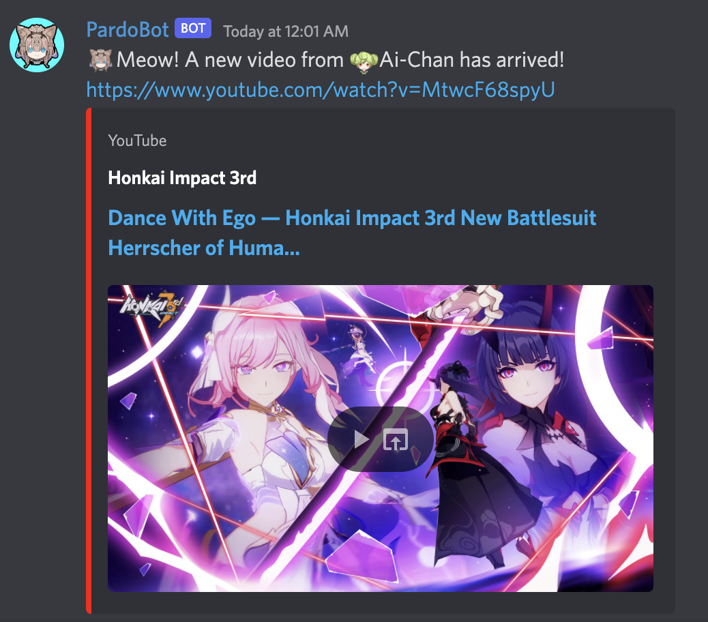
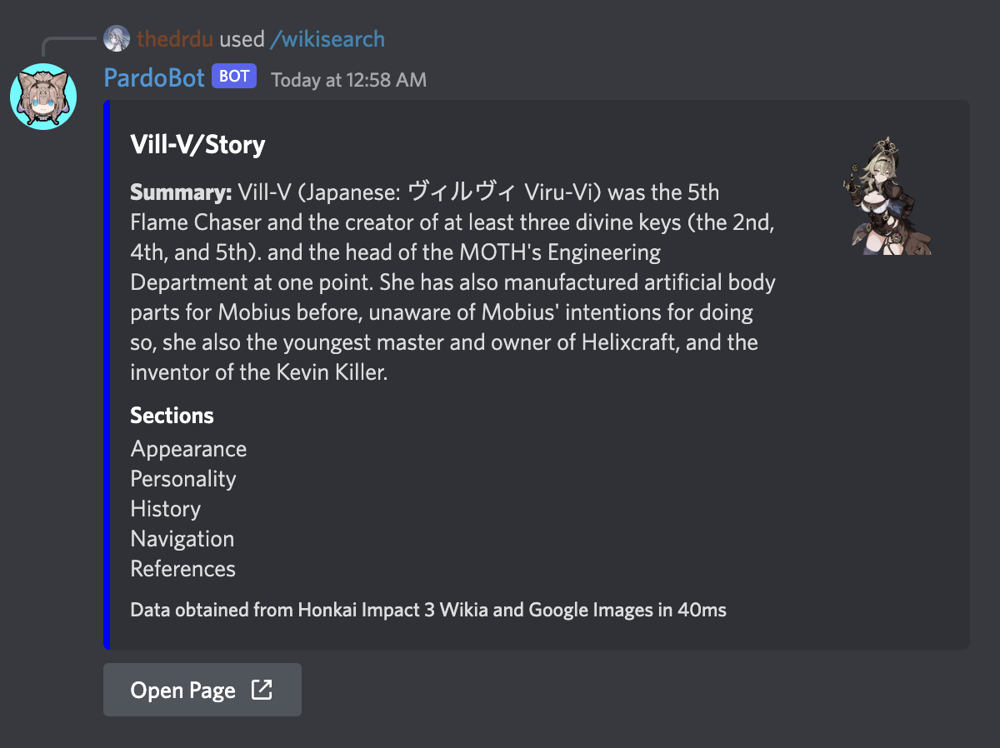
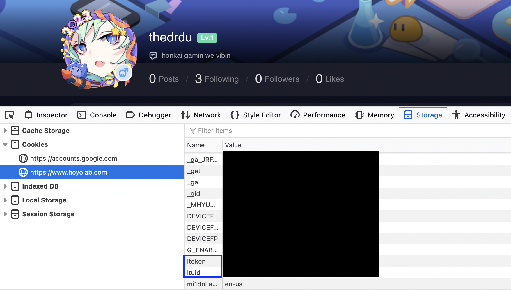
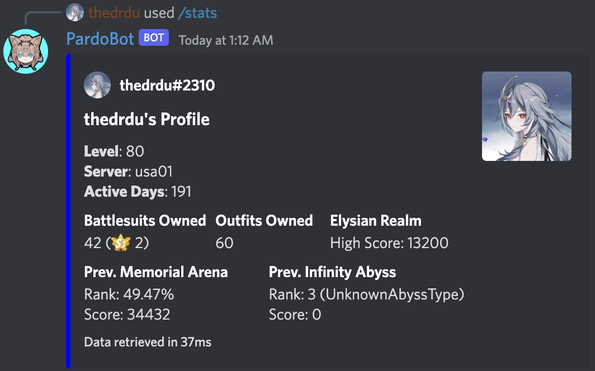
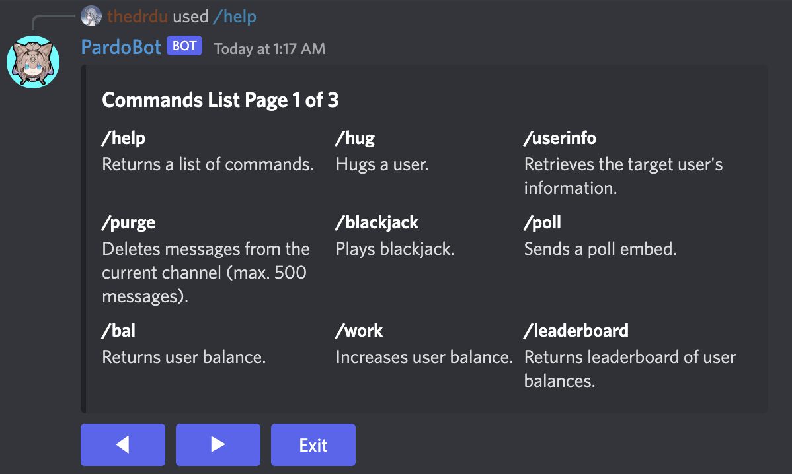

Usage: /latesttweet
Returns the latest tweet from the official Honkai Impact 3rd Twitter account.
Usage: /confignews {channel}
Configures the news channel in the guild the command is run in to the specified channel.

Usage: /resetnews
Deconfigures the news channel in the guild the command is run in.
Usage: /wikisearch {query}
Links the top result on the Honkai Impact 3rd wikia, along with a short preview of its contents.

Usage: /configstats {ltuid} {ltoken} {honkai uid}
Configures your HoYoLAB account with PardoBot to allow her access to view your Honkai Impact 3rd stats. ENTER CAREFULLY!
Not sure how to get your ltuid and ltoken? Visit your HoYoLAB profile, right click > inspect element, and then search in storage!

Usage: /stats
Retrieves your Honkai Impact 3rd stats.

General
Usage: /help
Returns a list of commands and short descriptions for each.
